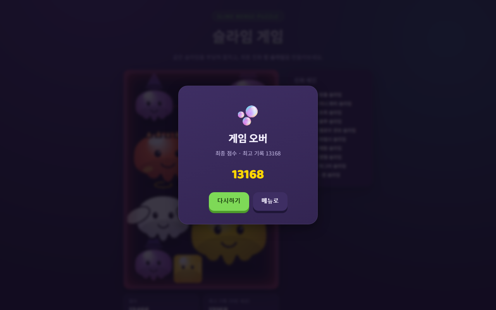

슬라임 게임 자동 테스트 결과
실행: 2026-11-01 21:05 · 도구: Playwright(Chromium) · 대상: slimegame.html · 리포트 생성: 2026-11-01
22 / 58자동화한 기존 TC / 전체 TC (+탐색 중 추가 1)
17테스트 수 (TC 여러 개를 묶은 것 포함)
16통과
1실패
151초전체 실행 시간
게임 코드를 고치지 않고 화면에 보이는 값(점수·다음 슬라임 이름·결과 창)으로만 판정한다. 무작위로 정해지는 다음 슬라임은 테스트 안에서 순서를 고정해 매번 같은 결과가 나오게 했다.
실패 상세
[탐색-1] 게임 오버 뒤 보드 점수가 결과 창 점수와 같고 더 오르지 않음
Error: 1판째: 결과 창 13168점, 3초 뒤 보드 13456점 expect(received).toBe(expected) // Object.is equality Expected: "13168" Received: "13456"

자동화한 TC (23건)
검토 칸: 자동화 대상은 Claude Code가 고른 초안이고, 작성자(LKM)가 확인해 '확인함' 또는 '버림'으로 바꾼다.
| TC | 내용 | 결과 | 시간 | 검토 |
|---|---|---|---|---|
| 공통-3 | 물리 엔진 로드 후 콘솔 오류 없음 | 통과 | 3.5초 | 초안 |
| 공통-5 | 외부 스크립트 차단 시 흰 화면 없이 메뉴 유지 | 통과 | 0.9초 | 초안 |
| 공통-7 | 타이틀·서브 카피 노출 | 통과 | 4.1초 | 초안 |
| 공통-8 | 솔로 모드 진입 시 새 보드 초기화 | 통과 | 1.2초 | 초안 |
| 공통-9 | 멀티 모드 진입 시 방 만들기 탭 기본 활성 | 통과 | 0.9초 | 초안 |
| 공통-10 | ← 메뉴로 링크로 메인 메뉴 복귀 | 통과 | 1.0초 | 초안 |
| 공통-11 | 데스크톱(720px 초과) 모드 카드 가로 배치 | 통과 | 0.8초 | 초안 |
| 공통-12 | 모바일(720px 이하) 모드 카드 세로 배치 | 통과 | 0.7초 | 초안 |
| 공통-13 | 결과 창은 바깥 클릭·Esc로 닫히지 않음 | 통과 | 43.3초 | 초안 |
| 플레이-3 | 캔버스 클릭으로 드롭 | 통과 | 1.0초 | 초안 |
| 플레이-4 | 스페이스바로 드롭 | 통과 | 1.0초 | 초안 |
| 플레이-5 | 드롭 쿨다운(0.42초) 내 추가 입력 무시 | 통과 | 1.6초 | 초안 |
| 플레이-6 | 드롭 후 다음 슬라임 정보 갱신 | 통과 | 1.0초 | 초안 |
| 플레이-7 | 같은 단계 2개 충돌 시 한 단계 위로 병합 | 통과 | 3.3초 | 초안 |
| 플레이-8 | 병합 점수 = (n+1)(n+2)/2×8 (2단계 24점) | 통과 | 3.3초 | 초안 |
| 플레이-10 | 새 최고 단계 생성 시 진화 체인 강조 | 통과 | 3.3초 | 초안 |
| 플레이-12 | 게임 오버 시 최고 기록 갱신 | 통과 | 43.3초 | 초안 |
| 플레이-16 | 경고선 침범 지속 시 게임 오버 결과 창 | 통과 | 43.3초 | 초안 |
| 플레이-19 | [다시하기]로 점수 0 새 게임 | 통과 | 43.3초 | 초안 |
| 플레이-20 | [메뉴로]로 메인 메뉴 복귀 | 통과 | 39.4초 | 초안 |
| 플레이-24 | [참가하기] 탭 전환 시 입력창 노출 | 통과 | 0.9초 | 초안 |
| 플레이-26 | 빈 코드로 [연결하기] 시 안내 문구 | 통과 | 1.0초 | 초안 |
| 탐색-1 | 게임 오버 뒤 보드 점수가 결과 창 점수와 같고 더 오르지 않음 (자동 테스트 중 발견, 기존 TC에 추가 제안) | 실패 | 46.6초 | 초안 |
자동화하지 않은 TC와 이유
| TC | 이유 |
|---|---|
| 공통-1 | 파일 더블클릭 실행은 사람이 탐색기에서 확인 |
| 공통-2 | 실제 모바일 기기·브라우저 필요 (공통-12는 화면 크기만 흉내 냄) |
| 공통-4 | 외부 P2P 중계 서버 응답에 따라 결과가 달라짐 |
| 공통-6 | 폰트 모양은 눈으로 판단 |
| 공통-14 | 크롬만 설치함. 파이어폭스·사파리 엔진도 무료로 추가 가능하나 이번 범위 제외 |
| 공통-15 | 색감 일관성은 눈으로 판단 |
| 플레이-1 | 커서 위치는 캔버스 안 그림이라 화면 값으로 읽을 수 없음 |
| 플레이-2 | 터치 드래그 손맛은 실제 기기에서 확인 |
| 플레이-9 | 여러 쌍 동시 병합을 같은 프레임에 일으키기 어려움 |
| 플레이-11 | 킹 슬라임 2개를 만드는 데 시간이 너무 오래 걸림 |
| 플레이-13 | 낮은 점수 게임 오버를 일부러 만들기 어려움 |
| 플레이-14 | 경고선 침범 비율(60%)은 게임 내부 값이라 화면으로 읽을 수 없음 |
| 플레이-15 | 위와 같음 |
| 플레이-17 | 위와 같음 |
| 플레이-18 | 0.55초 유예는 내부 타이머라 화면으로 읽을 수 없음 |
| 플레이-21 | 눌림 애니메이션의 부드러움은 눈으로 판단 |
| 플레이-22 | 외부 P2P 중계 서버 필요 |
| 플레이-23 | 클립보드 권한이 브라우저마다 다름 |
| 플레이-25~43 | 멀티 대결은 두 사람·외부 P2P 서버가 필요. 다음 단계에서 브라우저 2개로 시도 가능 |